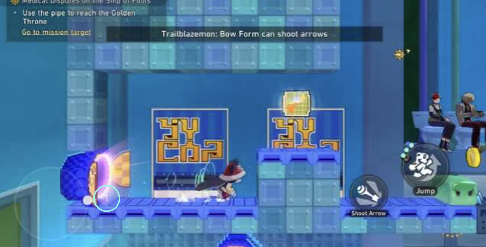
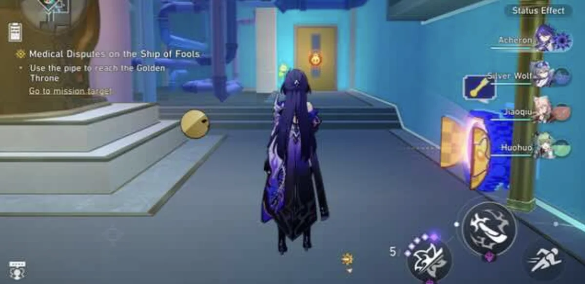
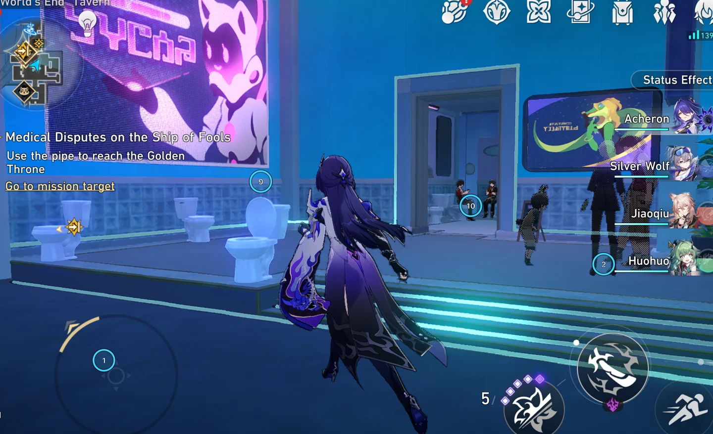
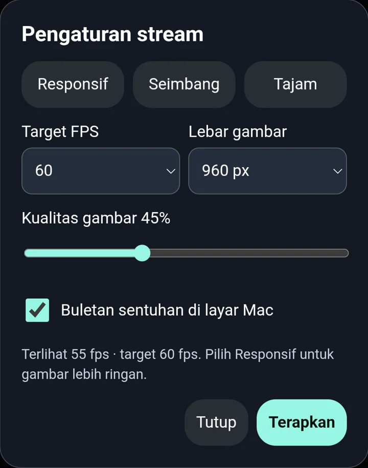

Touch your
Mac games
Use your Android as a real multitouch screen for PlayCover. Game video and independent touches travel over USB.
Download sourceOpen source. Nothing to install on your phone.

Every finger counts
Move the virtual stick and control the camera together. Each finger reaches PlayTools as its own touch, inside the iOS game.
Try touch tracking
Press or touch the picture to place a contact. Use the buttons to hold two contacts together.
No contacts
This preview runs in your browser. It doesn’t connect to a game.

Plug in and play
A USB cable links the two screens. The Mac runs the game; Chrome becomes your view and touch surface.
Connect
Connect your Android
Plug the phone into your Mac over USB. Enable USB debugging and authorize the Mac when Android asks.
Keep Chrome installed and the phone unlocked.
Prepare
Get your Mac ready
Install Xcode command-line tools, Python 3 and ADB. Install PlayCover, PlayTools and the HSR global iOS app.
Allow macOS Screen Recording for the capture helper or launching Terminal. Quit the game if it’s already open.
Launch
Start the bridge
Download and extract the source ZIP. Double-click Start.command. The bridge launches the game with a temporary touch module.
Keep that Terminal window open while playing.
Play
Play in Chrome
Chrome opens on Android automatically. Tap Fullscreen, turn your phone to landscape, and touch the game picture.
Press Ctrl+C in the Mac Terminal when you’re done.

Independent touch contacts visible on the Mac during a test session.
Tune the stream
Keep the game running. Change how it reaches your phone.
Picture and pace
Choose a 30, 45 or 60 FPS target. Adjust width and JPEG quality, or use the Responsive, Balanced and Sharp presets.
Controls that move
Drag the toolbar, turn it horizontal or vertical, and choose its opacity and auto-fade. Your preferences save on the phone.
See every touch
Optional numbered markers on the Mac show independent contacts. Release touches from the phone whenever you need to.

Tested together
This setup passed end-to-end testing.
Mac
Apple Silicon
PlayCover
3.1.0
With PlayTools
Game
Honkai: Star Rail
Global iOS app
Android
Galaxy A54
Google Chrome
Other games and PlayCover versions are unverified. The launcher currently targets HSR; the repository explains how to adapt it.
No audio forwarding. Actual FPS depends on your hardware and settings. End-to-end latency has not been instrumented.
Before you connect
What does the phone need?
Android Chrome, a USB connection and USB debugging enabled. The bridge interface is a web app, so there’s no Android app to install.
Does it change the installed game?
The installed game binary, PlayTools framework and keymaps are not patched. The bridge launches the game with a temporary touch module. Quit the game and reopen it from PlayCover to return to a normal session.
Where does the video go?
The bridge listens on the Mac’s loopback interface. ADB reverse carries the connection over USB, and requests require a random session token. The game stream doesn’t go through a cloud server.
What if a touch gets stuck?
Tap Release touches on Android. Closing the page or losing the heartbeat also releases held contacts, with a fallback timeout of about 3–4 seconds.
Is this an official PlayCover release?
No. This is an independent community add-on by Dany Arkham. It sends input to PlayTools’ own touch engine. Source code is available under the MIT licence.